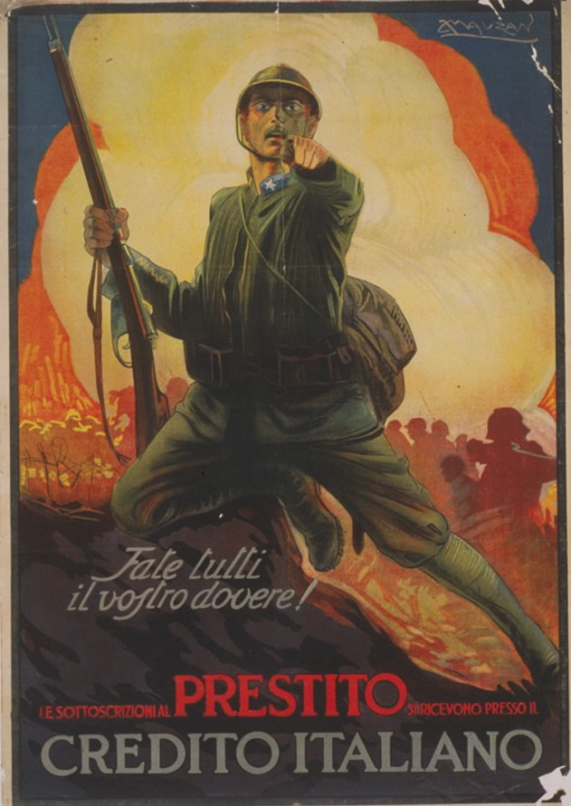

Fate tutti il vostro dovere!
Achille Mauzan · 1917 · Poster · Library of Congress, Prints and Photographs Division
Free to use
The title means Everyone must do his duty! It asked Italians to subscribe to the war loan through the Credito Italiano bank.
Open in The ArtchiveFull-size file ↗
More like this